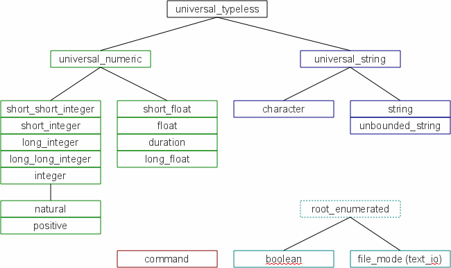

![[SparForte]](art/sparforte.png)
![[Banner]](art/header_cloud.png)
![[Top Main Menu]](art/menu_left.png) |
Intro | Tutorials | Reference | Packages | Examples | Contributors |
| | |||||||||||||||
| ||||||||||||||||
Fundamental TypesAll AdaScript variables have a type. Variables must be declared so that SparForte knows what that type is. When new variables are created by assignment at the command prompt, SparForte chooses an appropriate type for the new variable. In scripts, all variables must be declared.  Figure: SparForte Predefined Scalar Data Types and their Relationships Identifier NamesIdentifiers must begin with a letter and may contain letters, numbers and underscores. There is no minimum or maximum length to identifiers. For long names (more than 32 characters), the names should contain underscores. Style Restrictions on Identifier NamesSparForte imposes style restrictions on identifier names. These restrictions are for names that are technically acceptable but are not practical in real scripts. Some of these restrictions only apply to certain contexts.
Implementation Rationale: As much as possible, only "common sense" style issues are implemented. Some issues enforced by other languages or tools do not have evidence that they are effective: for example, single letter variables are often prohibited, but variables like "x" and "y" are commonly used in computer graphics. Usually the restrictions are removed for the command prompt, where style is less important. Universal TypesThere are three "universal types":
The first two types form the basis for all other AdaScript string and numeric types. Variables declared as universal_typeless change their type between universal_string and universal_numeric depending on how they are used. If an enumerated value is assigned to a universal_typeless variable, it becomes a number with the ordinal value of the enumerated item. If AdaScript cannot decide in a particular context, the variable type defaults to universal_string. Typeless variables correspond to variables in Bourne shells and are provided for as a command line convenience. Universal types automatically match any type derived from the same universal type. A universal_numeric variable accepts integer or floating point values. A universal_string variable accepts single characters or strings containing many characters. Universal types are used for all AdaScript literals. For example, a string literal like "hello" is a universal_string and can be assigned to any string type. The numeric literal 45.5 is a universal_numeric and can be used with float, long_float, or any other numeric type. Using these three built-in types will give you a minimum amount of type checking, suitable for short scripts or quick command line calculations. Universal types should not be used in large scripts because they will greatly reduce the number of errors SparForte can detect. Variables are declared as name, a colon and the type. More than one name can be used in a comma list to declare several variables of the same type at one time.
=> i : universal_numeric; Ada: Ada has no usable universal types but the Ada rationale uses universal types to describe the type system. Predefined, Non-Universal TypesFor more extensive scripts, AdaScript extends the universal string and numeric types into all the predefined Ada language types, plus some AdaScript-specific types:
The built-in packages may define additional types. By default, all numeric variables are initialized without any value. Any attempt to use uninitialized numeric variables in an expression will cause an error or exception. => i : integer -- no value specified Most types are incompatible with each other. Types may be typecast into related types. => i : integer := 5 You cannot typecast a numeric type into a string type directly. There are functions in the numerics and strings packages to do these conversions. Integer, Natural and PositiveNatural and positive are technically subranges of the integer type. Positive is an integer with positive values. Natural is an integer with zero or a positive value. SparForte does not support subranges. This creates a problem: if they are all incompatible types, then typecasts will be needed whenever they are used. If they are all subtypes, then the benefits of strong typing are lost. Before SparForte 1.4, natural, positive and integer were defined as distinct types. After SparForte 1.4, natural and positive are subtypes of integer. You can mix natural, positive and integer in expressions, assignments and parameters. However, as a special case, SparForte will check the values of natural and positive when assigned to a variable, type cast or used as a parameter. This run-time check only occurs for natural and positive types, not types derived from natural or positive. => p : positive := 1 Ada: natural and positive are subranges of integers. That is, Ada sees them all the same except there are range restrictions on acceptable values. Arithmetic is done by treating them all as integers. The range of acceptable values is only checked when a value is assigned to a variable or parameter. SparForte cannot do this because it doesn't have subranges. C/C++/Java: A natural is not the same as an unsigned type. A natural is an integer with a restricted set of values and the sign bit is not used for storing values. Type AttributesThe System package contains information about the representation of types on your computer. You can use this package to determine the minimum integer, or the precision of a floating-point number. Array properties can be discovered with the arrays package. In this case, this is a 64-bit computer (with 8-bit bytes) and it has a maximum integer of 999,999,999,999,999. ? System.Min_Int See the description of the System package for more information. String GotchasSince all literals have a universal type, this can cause some unusual side-effects. A character variable can contain more than one character if you really want it to by assigning a string literal. Characters are stored as internally as a string and a string literal is a universal_string type. AdaScript will allow the assignment. However, the type checking will prevent a character variable from being assigned to a string variable. => i : integer := 5 In this example, "hello" is a literal so it is a universal_string. The variable c is a character, a type derived from universal_string. So SparForte allows the assignment. Internally, SparForte uses strings for characters so the entire value of "hello" is assigned to c and c is now a character variable with 5 characters in it. However, SparForte's type rules prevent c from being assigned to a string, and typecasting will check the length of a character variable. (This will likely get addressed in the future.) AdaScript strings are an unbounded string type--that is, they are stored as an Ada.Strings.Unbounded.Unbounded_String variable. They have an unlimited length and are not implemented as any sort of array. Ada "fixed" strings, the default string type for GCC Ada, are not used because they have limited length and can create array bounds exceptions. Strings are an integral part of scripts and unbounded strings are used instead. AdaScript includes an unbounded_string type (it has the same properties as the string type) which may make porting to GCC Ada easier. Type and Variable Usage QualifiersTypes and variables have an optional usage qualifier. This places constraints on how the type or variable may be used. The following table lists the qualifiers from least restrictive to most restrictive.
A constant is something that is defined once and never changed afterwards. For example, it may be used for the title of a report. A limited is something that is a "black box" that is assigned once. It cannot be assigned a new value, copied or used in math expressions. For example, id numbers returned by the system or the text_io file_type or socket_type types. An abstract is a type that is not to be used for storing values: it cannot be used to create variables or parameters. They are especially useful when designing a project and the details of the type are not known. => f : file_type Creating your own types and using the usage qualifiers are described in the User-Defined Types section. Complex TypesVariables declared complex represent complex numbers. A complex number is a record with long_float real and imaginary parts. The real field is designated "re" and the imaginary field is designated "im". (See below for more information about using records.) => c : complex := ( 1.0, 2.0) Some of the numerics package subprograms work with complex types. Complex types are not fully implemented in this version of SparForte: some of the Ada complex number functions are not available. Command TypesExternal operating system commands can be declared using command variables. When a command is declared, SparForte will ensure that the command exists and can be run. Command types are similar to limited types and have several restrictions.
=> l : limited command := "/bin/ls" The purpose of command types is improve reliability in scripts. In a sense, they are shell aliases in that they can rename commands to run. They can be used for aliasing commands at the command prompt. However, they are not intended to replace shell aliases. The best way to create the equivalent of shell aliases is to write your new commands as external scripts. JSON and SparForte TypesJSON is an acronym for JavaScript Object Notation. It is an easier-to-use and more limited standard for data interchange compared to XML. Many programming languages support JSON. SparForte contains several functions to convert variable values into JSON, and JSON into variable values. JSON doesn't support enumerated types, so SparForte converts enumerated types into integer, the ordinal position of the enumerated values. Records are converted into JSON objects. If an array or record has a json_string component within it, the content of the json_string is assumed to be JSON data and will be added as-is to the JSON-encoded aggregate. Use json_string to build up more complex JSON structures like arrays of arrays. Currently, SparForte doesn't support UTF-8. It doesn't support characters larger than 8 bits. Encoding arbitrary control characters with \u is not yet supported. Carriage returns, line feeds, and other backslash escapes are supported.
Exceptions are raised for a number of conditions:
type a_sample_enum is ( e1, e2 , e3 );
Example: Encoding a record as a JSON string
<?php
Example: Decoding JSON string into a PHP Object
RenamingsA renaming is a second name (or alias) for a variable. Both the renaming variable and the original (or canonical) variable share the same value. Variables renaming other variables can be done for scalar variables, commands, arrays, array elements, records, record fields and enumerated variables. An exception cannot be renamed. => this_month : string := "October" The type must be identical, or subtypes of each other. A universal_typeless variable must be renamed by another universal_typeless, for example. Values can be assigned to the renaming variable (if the variable is not a constant or limited, of course). The original variable's value will also change. The type qualifier may be changed. You can "downgrade" the usage on a type in a renaming. For example, a constant variable can be renamed as a limited variable because limited is more constrained than a constant. Also a renaming of a variable can be a constant, creating a read-only renaming. However, you cannot remove constraints of the qualifier by a renaming. A constant must be renamed by another constant or limited you cannot change a constant into a variable by renaming. A limited must be renamed by another limited. => q : constant character renames Latin_1.Quotation There can be multiple renamings on one identifier, or you can have renamings of renamings. => title := "My Report" Commands that alter variables like "unset" and "typeset" will not work on variables referred to by existing renamings. The renamings must be removed first. The "env" command, when used on a renaming, will show both the renaming and the original variable. Types can be renamed with the Ada: A constant renaming is not permitted in Ada. When renaming a constant in Ada, the keyword "constant" is not used. Since SparForte doesn't implement value ranges for subtypes, natural and positive, subtypes of integer, are equivalent to integer for renaming purposes. Other types, like short_integer, remain incompatible with integer. CopyingA variable's value can be copied in a declaration with copies. The new variable will have the same value as the old variable. Limited variables cannot be copied. |
||||||||||||||||||||||||||||||||||||||||||||||||||||||||||||||||||||||||||||||||||||||||||||||||||||||||||||||||||||||||||||||||